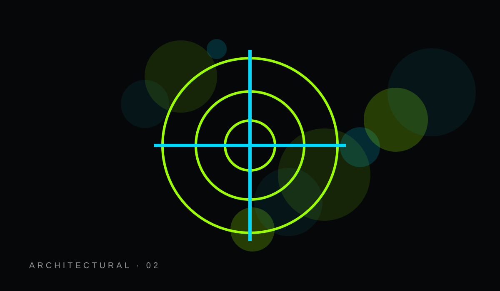
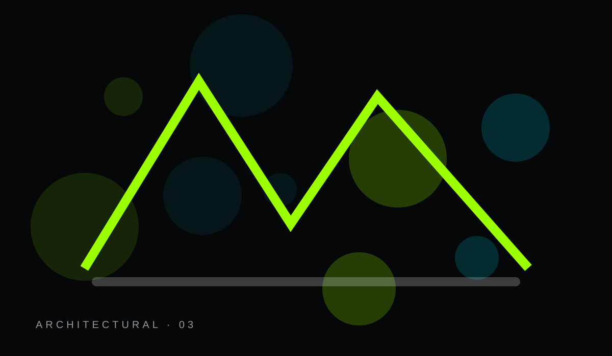
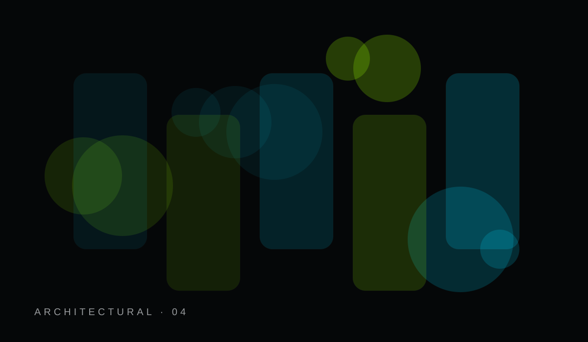
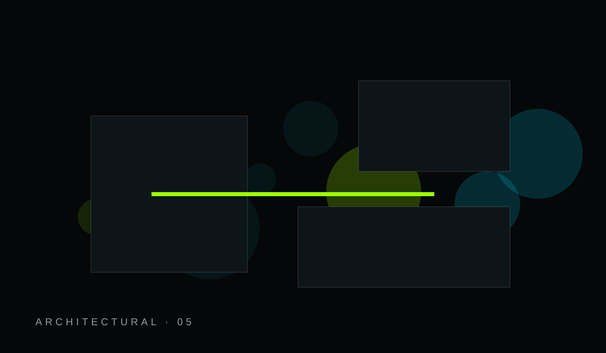
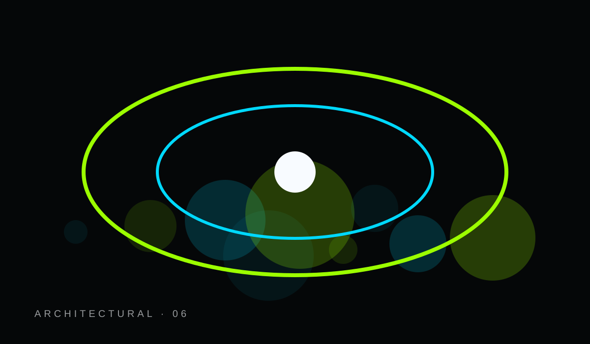
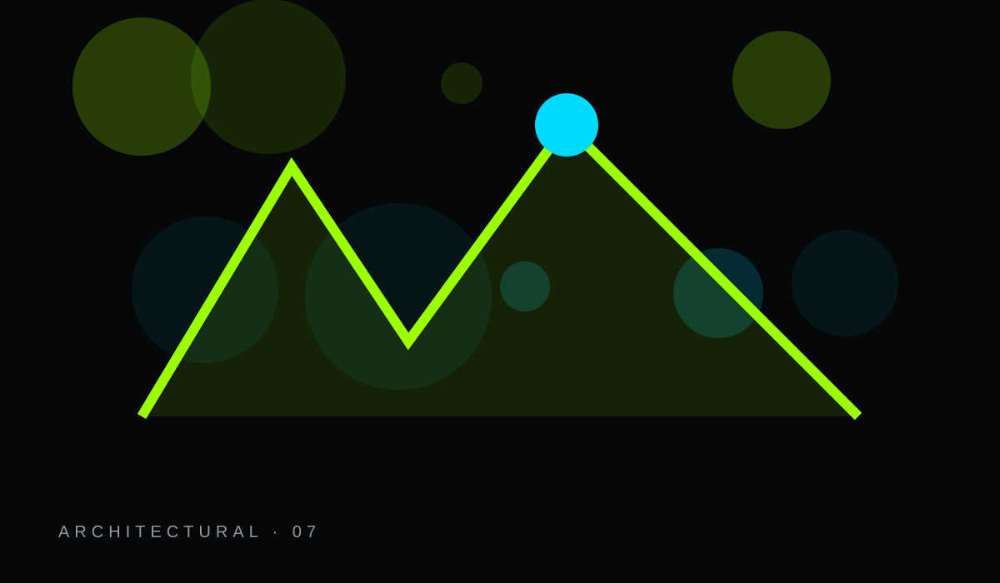
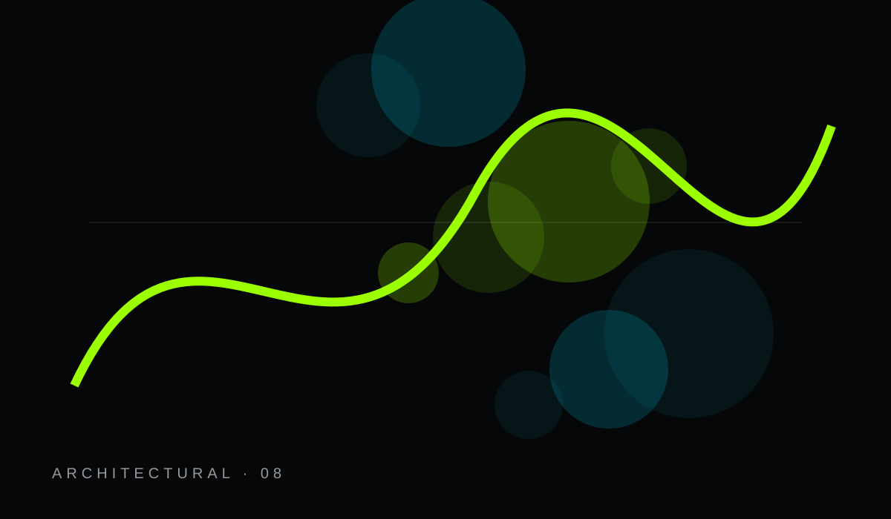
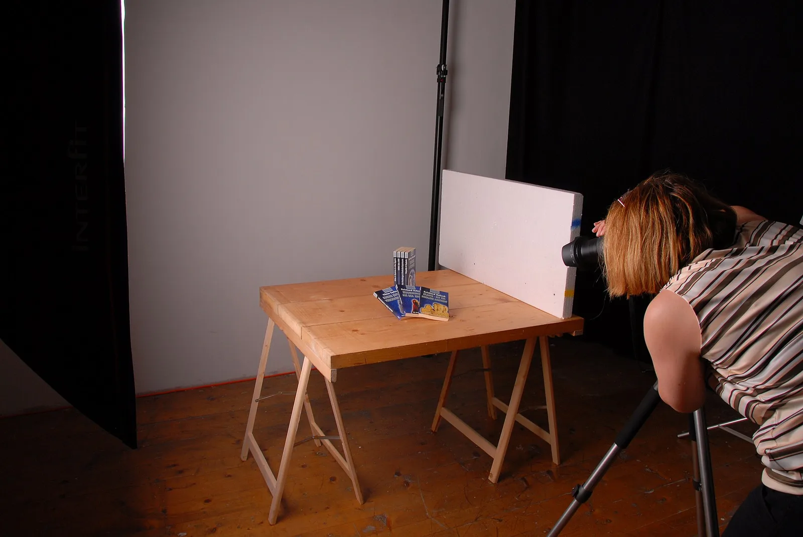
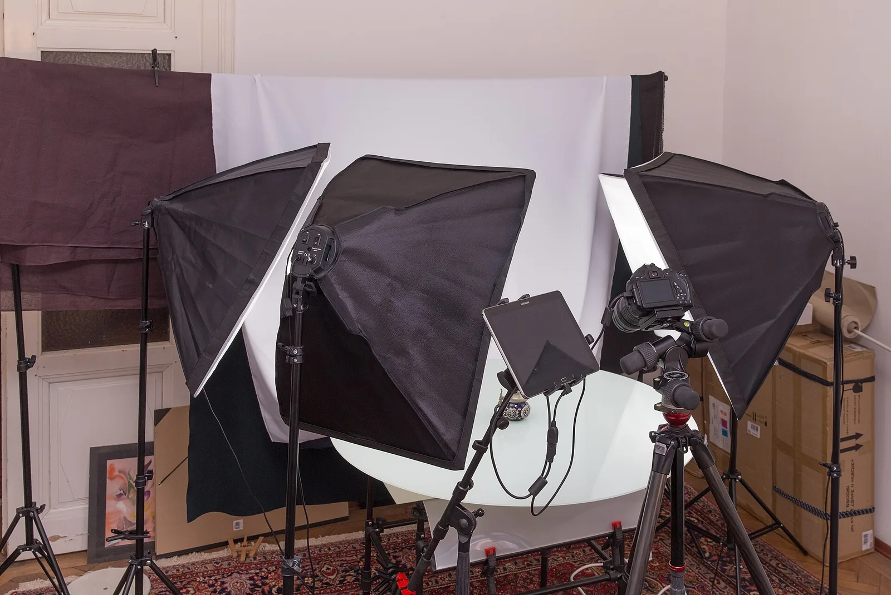
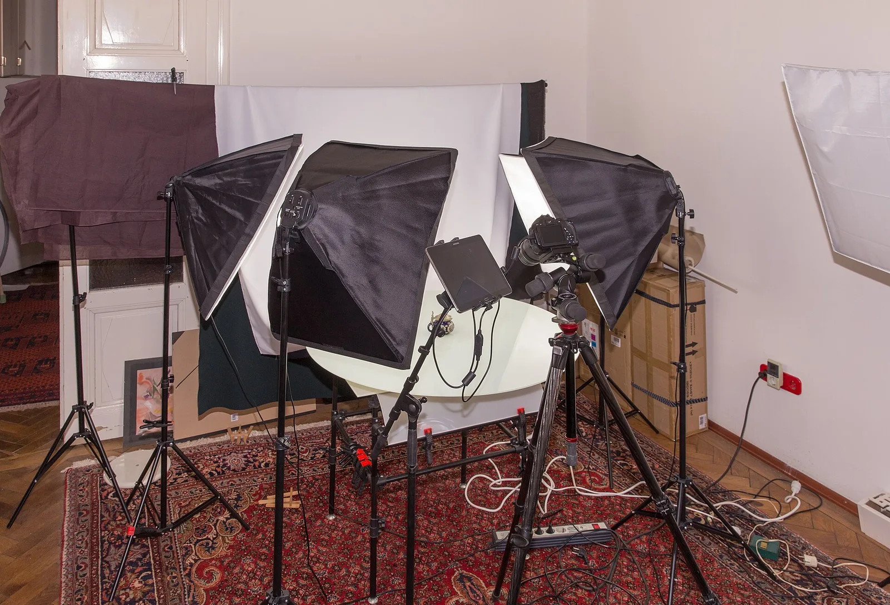

Shop
Storefront architecture ready for verified catalog data.
Explore ↗COMMERCE / BRAND / EXPERIENCE
Editorial storytelling, collections, product discovery, customer support, trust, and a commerce-ready architecture — without inventing live inventory or prices.
Storefront architecture ready for verified catalog data.
Explore ↗Curated discovery and merchandising structure.
Explore ↗Stories, lookbooks, campaigns, and brand culture.
Explore ↗Wishlist, account, support, shipping, and returns.
Explore ↗A safe handoff to a real payment provider when configured.
Explore ↗Policies, privacy, accessibility, and support.
Explore ↗



BUILT TO EXPAND
The system connects brand, products or services, resources, support, trust, media, search, SEO, accessibility, and GitHub publishing. Industry modules add the pages that make sense for this business.
Explore the design system ↗


The site includes storefront, catalog, product-detail, cart, wishlist, checkout handoff, shipping, returns, account, and support modules. Live selling stays disabled until verified inventory, pricing, and a real checkout provider are connected.
NEXT STEP
The storefront structure is ready to connect to verified products, inventory, shipping, tax, and a real checkout provider.
REAL MEDIA LAYER
Reusable photography is selected by topic and kept consistent with the site system. Full source and license credits are available below.


